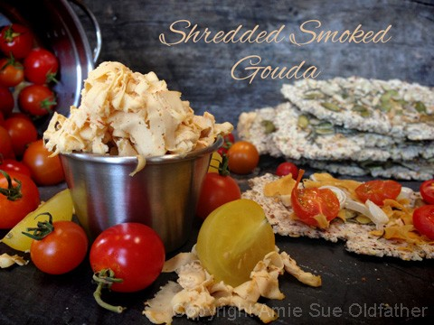
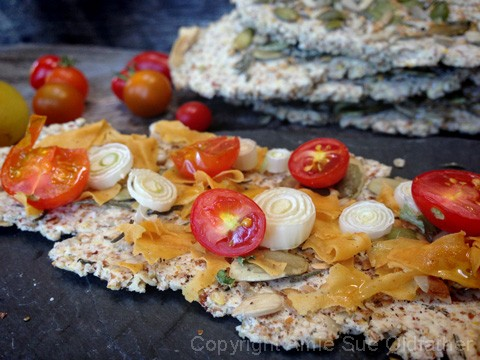
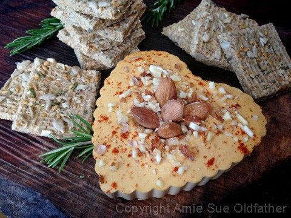
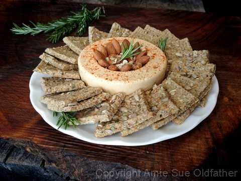
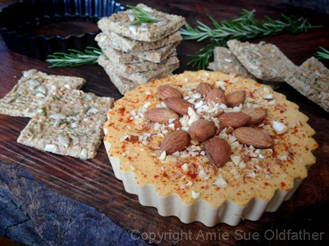
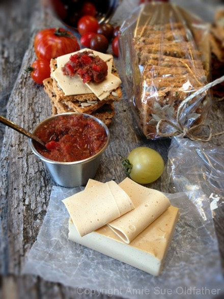

Smoked Gouda Cheese

~ high raw, vegan, gluten-free ~
I really enjoy making vegan and nut-based “cheeses.” Not only because they are dairy-soy-gluten-free, but they can be made fairly quickly. Most nut-based cultured cheeses take anywhere from 6 hours to 48 hours to ferment. But this cheese only takes about 30 minutes, from the time you start till the time you can enjoy it!
I didn’t use anything to culture this cheese, but thanks to the nutritional yeast, it has a nice cheddar cheese flavor. To achieve the cheese-like firmness, I used Agar (also known as agar-agar) as a gelling agent which is an amazing culinary ingredient.
Agar is derived from red algae and, when used in recipes such as this one, acts as a stabilizing and thickening agent. Like gelatin, gelling only occurs with Agar when a recipe containing it has cooled after being boiled. Agar gels will stay stable even after reaching 185 degrees (F) and doesn’t require refrigeration to set. It takes a liquid food and changes it to a solid, jelly-like texture.

As I did some research and I found out that Agar is a good source of calcium and iron, and is very high in fiber. It doesn’t contain sugar, fat or carbohydrates, and is known for its ability to aid in digestion as well as carrying toxic waste out of the body.
It is also shown to reduce inflammation, calm the liver, and bring relief to the lungs. Agar is a rich source of water-soluble, indigestible fiber. In the digestive tract, it absorbs water, increases bulk, and stimulates large bowel muscle contractions. Agar’s most common therapeutic use has been as a laxative, and it has been used for decades as a daily treatment for chronic constipation. For more information, you can read about it at the WellnessTimes site. So even though it isn’t a raw ingredient… it doesn’t come with some pretty amazing health benefits. You will have to decide for yourself which of these is a higher priority.
Oh, for Pete’s sake, at the tail end of my research, I found that it isn’t just called Agar or Agar… Nooo, it goes by a long laundry list of names; Agal-agal, agal-agal gum, Agar (CAS 9002-18-0; EINECS 232-658-1), agar-agar, agar-agar gum, agaro-oligosaccharides, agar powder, agar-tang (Dutch), agarweed, aloe wood gum, Bengal isinglass, Ceylon agar, Ceylon isinglass, China grass, Chinese gelatin, Chinese isinglass, chun chow, colle du Japon (French), dai choy goh, Garacilaria confervoides, Gelidiella, acerosa, Gelidium species, Gelidium spp. gum, gelosa, gelosae, gelose, Japan agar, Japan isinglass, Japanese gelatin, Japanischer Fischleim (German), kanten, kyauk kyaw, layor carang, macassar gum, puchratka amansova (Czech), red seaweed, Rhodophyceae (Family), seaweed gelatin, vegetable gelatin, woon. Do any of these ring a bell with where you live in this vast world of ours? :)
For this recipe, you can make some easy alternations if needed. You can use all almonds or all cashews. I haven’t tried it with any seeds, but I worry that the batter wouldn’t get creamy enough. I also added liquid smoke. You can omit this and up the smoked paprika if desired. Before adding the Agar, you can taste test and see what adjustments may be needed. At this point, I don’t recommend substituting out the Agar due to the texture properties that it gives. But you are always welcome to experiment! :)
- 1/2 cup (67 g) raw almonds, soaked
- 1/2 cup (76 g) raw cashews, soaked
- 3/4 cup (162 g) water
- 2 Tbsp (27 g) fresh lemon juice
- 1 tsp (7 g) maple syrup
- 1 tsp (6 g) fresh pre-made mustard
- 1/2 tsp (1 g) liquid smoke
- 1/4 cup (26 g) nutritional yeast
- 1/2 tsp (3 g) Himalayan pink salt
- 1 tsp (3 g) smoked paprika
- 1 tsp (3 g) garlic powder
- 1 Tbsp (8 g) minced, dried onion
Agar Gel
- 1 cup (210 g) water
- 5 Tbsp agar flakes or 1 1/2 Tbsp (12 g) agar powder
Preparation:
- After soaking the almonds and cashews, drain and rinse them. Place in a high-powered blender.
- Add 1/2 cup water, lemon juice, agave, mustard, liquid smoke, nutritional yeast, salt, paprika, garlic powder, and minced dried onion. Blend until creamy.
- The mixture will be thick. If you have a Vitamix with a plunger, use that to keep the mixture moving.
- Otherwise, stop your machine occasionally to scrape the sides down.
- Test for grittiness by rubbing it between your thumb and finger. If you feel the grit, keep blending.
- Once the cheese mixture is ready, it is time to make the Agar.
- In a small saucepan, bring 1 cup of water to a light boil, add the Agar.
- Stir continuously until the Agar had dissolved, this can take several minutes. Keep whisking!
- If it gels up in the pan, return to heat and melt it down again.
- Start the blender and get a vortex going with the mixture. Drizzle in the agar gel and blend until combined. You will need to stay focused and move fairly quickly. Agar will start to set up as it cools.
- Pour into mold and then place in the fridge, uncovered, for at least 30 minutes. Eat sliced or shred!
- Note ~ I don’t use anything to prepare my molds to help them release once it has set. It is good about just popping out.
- Keep in the fridge for up to 5 days.

Here, I just played around with using different molds. Just to show you that
the sky (or your pantry haha) is the limit when it comes to using unique containers.
Above, I used my mini heart tart pan, and below I used a mini cake pan.

And here I used a mini round tart pan.


© AmieSue.com